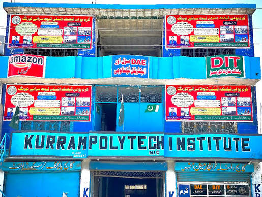

Learn. Practice.
Build your future.
A digital learning platform for Kurram Polytechnic Institute students. Explore course subjects, learning materials, practical activities, and useful resources in one place.
For KPI students
Learn at your own pace
Study. Practice.
Grow your skills

A shared place for KPI students to learn.
Use this platform to explore subjects, revisit learning materials, and practise skills from your studies. Course pages are organized to make it simple to find your next topic.
Browse DIT subjects ↗Explore the study areas.
Choose a subject area to open its dedicated course page. Detailed subject outlines can be added as the institute's course materials are provided.
Browse the Part I and Part II subject pages, from ICT and programming to databases, web development, and the capstone.
Explore DIT subjects ↗ 02 · TECHNICALDiploma of Associate EngineerLearn about the institute and its technical study opportunities.
Institute information ↗ 03 · SHORT COURSESShort & Safety CoursesFind institute information about safety and technical course tracks.
Institute information ↗ 04 · COMPUTER & LANGUAGELanguage & Computer CoursesExplore information about English, web development, and computer learning.
Institute information ↗Learn locally in Serai Naurang.
Kurram Polytechnic Institute, also known as Kurram Institute of Technical and Medical Education, is located on Main GT Road in Serai Naurang, District Lakki Marwat, Khyber Pakhtunkhwa.